Jump ahead to the examples.
The energy visualization system renders force fields as a semitransparent cloud around the various geometric tinkertoys that can be used to display molecular structure. Where the cloud is thickest, the forces are strongest. Where the cloud is thin or nonexistent, the forces are reaching equilibrium. Rendering is straightforward, done by hardware with volume textures. You control the resolution detail of the texture and all important aspects of the transfer function, which is tailored to ProteinShop's functionality.
The energy rendering system is built on top of ProteinShop's older energy visualization feature (based on colored atom spheres), which remains available. In particular, the controls for that system are also used by the this system. Including both the original settings and the new ones added for this system, you have a total of eight settings to control the transfer function and determine the general appearance and information conveyed by the energy cloud. The assemblage of these settings is illustrated below.
The data store in Figure 1 labeled Atom Energy is the energy calculator plug-in, which provides real-valued energy component terms and gradient vectors for each atom in the molecule. These numbers are processed according to the channel selected to produce a single floating-point value for each atom. Only the component terms selected in the discriminator are included. If no terms are selected in the discriminator, every atom's value will be zero. The number of toggles in the discriminator, c, is determined by the plug-in. For our AMBER plug-in, c = 5. If, for example, a solvation term is added to the force field, it will appear in the user interface as a sixth toggle in the discriminator.
Let the discriminator function 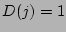 if the 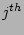 energy component is selected and 0 if not, 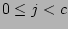. We compute the value 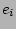 of the 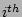 atom as
The value of is then clamped, and spread through the texel block by means of the radial basis and classification functions. The radius of the basis function is determined by the radial specifier, equal to the product of a multiplier chosen by the user with a slider and one of three coefficients: a constant (chosen with another slider), the atom's radius, or the atom's Van der Waals radius. The basis function 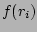 is a smooth curve similar to that used for the implicit modeling of molecular surfaces. It depends on the texel's distance 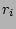 from the center of each atom:
The voxel block store holds texel magnitudes for each classification. Let the classification function 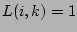 if the atom belongs to the 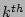 classification and 0 if not; 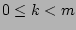 and 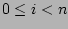, where 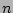 is the number of atoms in the molecule. Given the atom energy value (1), the radial basis 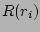 (2), and the classifier 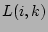, the texel magnitude 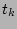 is
The normalizing interval 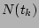 maps texel magnitudes to the unit interval (clamp and scale) for use with color functions. The color function 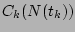 implements an arbitrary continuous color map. ProteinShop provides a dozen of these, including intensity functions (ranging from a component color at zero to white at one through different paths), constant functions, and invisibility to hide selected parts of the molecule. The final texel color is computed from the classified texel magnitudes (3) as a weighted average, defined as
| 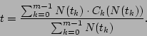 | (4) |
This pipeline runs in 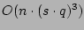 time, where is the resolution of the texture grid, by classifying each atom and determining which portion of the texture grid it will affect prior to iterative computation of Equation (3). The pixel transfer operations will require 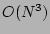 time in the width of the texel block regardless, but hardware makes this part of the computation relatively fast. In practice, depending on the size of the molecule and the resolution chosen, the execution of this pipeline requires anywhere from a fraction of a second to half a minute or more, but all of the textures shown here were produced in less than ten seconds on an obsolete machine (Pentium III, 733 MHz) with no 3D texture capability at all. Once generated, the textures can be viewed at interactive refresh rates, using suitable graphics hardware.
There are three classifiers in the current release: Unity, Hydrogen Bond, and Phobic-Philic. We provide an example of each. All three used the default clamp of [0, 100] and selected all components in the discriminator.
|
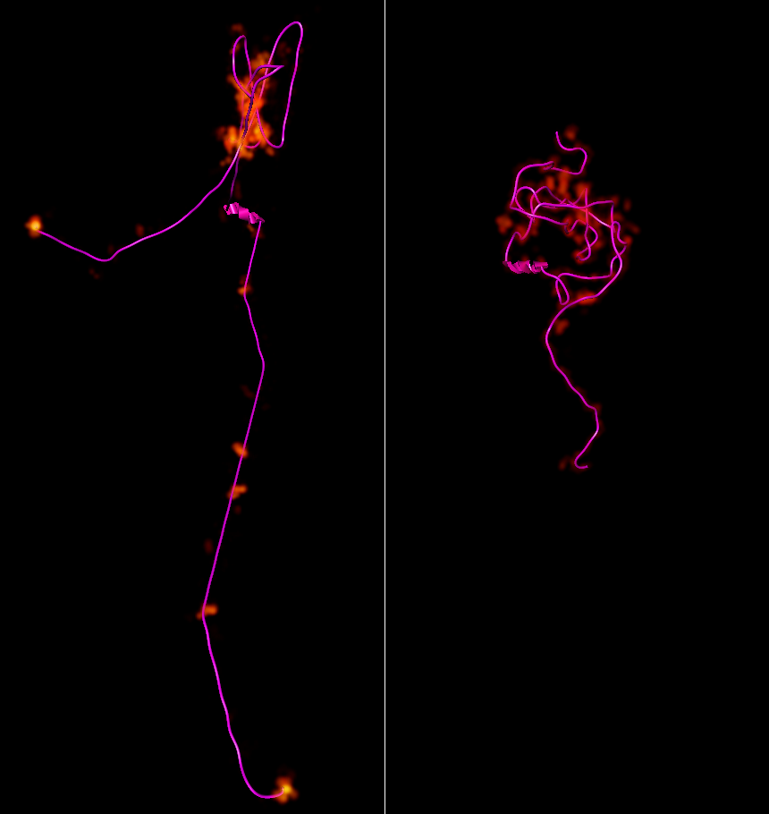
|
Unity is the default classifier, defined as 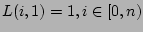, which basically applies the same color function to the entire molecule. The configuration shown in Figure 2 was locally optimized inside ProteinShop by our energy plug-in. The initial state was used to initialize the normalizing interval (the Calculate automatically toggle was set), and that normalizing interval was also used for the final state (i.e. the toggle was cleared). You can use the Record Dialog to establish the normalizing interval to use for animating an entire minimization run using one of the iterations as a baseline. Or, you can simply flip back and forth between interesting points.
|
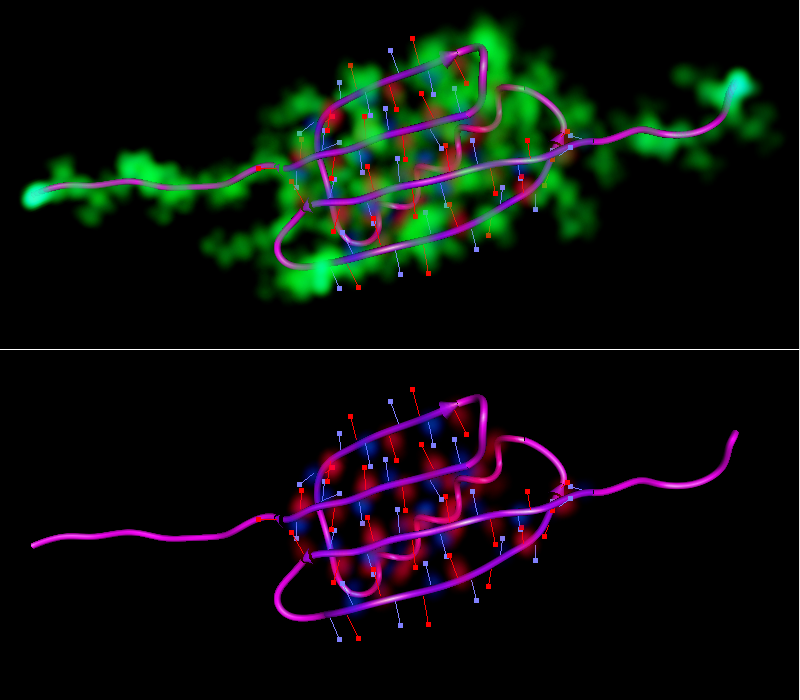
|
The Hydrogen Bond classifier distinguishes atoms belonging to dipoles forming hydrogen bonds from the others. Figure 3 shows two views of 1pgx made with this classifier that are identical except in their energy rendering. The utility of the invisible color function is demonstrated by its use in this case, because the dipole atoms are small in number. The force fields of atoms from small classes can be overwhelmed or obscured by large numbers of atoms in other classes.
|
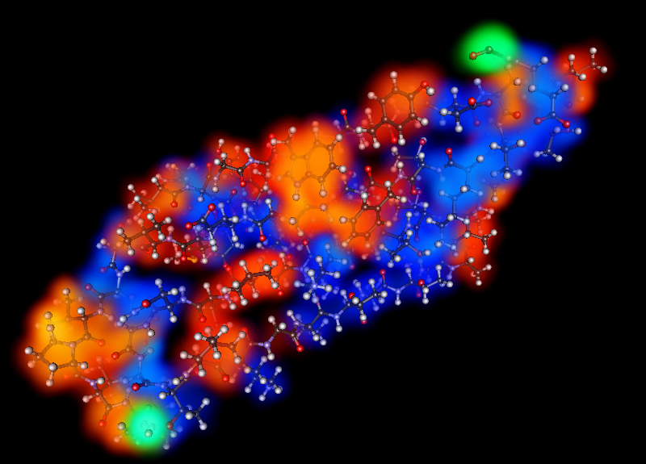
|
The Phobic-Philic classifier distinguishes atoms belonging to hydrophobic residues from those belonging to hydrophilic residues, and both of these from atoms whose residues are neither hydrophobic nor hydrophilic. A larger Radius multiplier was used for Figure 4 to support a better understanding of the overall shape of the molecule. This classifier can be used to evaluate the effects of solvation terms in the force field.
The classifiers and color functions were implemented in a highly modular way that makes the process of adding new functions to the source code almost trival. The actual time required depends on the complexity of the function, but a rich set of classifiers can easily be created in minutes based on ProteinShop's existing functionality. The four files involved in this process are AtomClassifier.cpp, AtomClassifier.h, ColorFunction.cpp, and ColorFunction.h. We offer an example for the classifier; the color function is analogous but simpler.
The default classifiers are implemented as singleton instances in AtomClassifier.cpp, made available through a static factory method (AtomClassifier::get()). The user interface uses this factory call in conjunction with AtomClassifier::numClassifiers() to initialize the menu in the Energy Rendering Dialog. To add a new classifier to the system, one only needs to define a new subclass of AtomClassifier and add it to the singleton array in AtomClassifier.cpp, where one finds a code template of the following form:
class Classifier : public AtomClassifier
{
public:
~Classifier() {}
uint classify (const MD::Protein::ChainAtom &atom,
const ProteinState &proteinState)
{
}
const char *className (uint classNum)
{
}
const char *name()
{
}
uint numClasses()
{
}
};
static Classifier f_Singleton;
To add a new classifier:
The name functions are important to the user interface; they are used to fill in the menu lists and dialog labels. The numClasses() function needs to return one higher than the largest possible value that can be returned by the classify() function. The classify() function can, in turn, be anything you need for it to be. You can also add any new members (functions or data) that your functionality requires. You can also add new constructors, but this will probably be be more complex; see below.
As a simple example, let's implement a new classifier called ExampleClassifier and add it to the system. This classifier will distinguish atoms belonging to Proline residues from all others. As such, it makes two classes, called Proline and Not Proline. The classifier itself will be called the Proline Partition. Following steps 1, 2, and 3, we modify the template to produce the following code:
class ExampleClassifier : public AtomClassifier
{
public:
~ExampleClassifier() {}
uint classify (const MD::Protein::ChainAtom &atom,
const ProteinState &proteinState)
{
Protein::Residue *residue = atom.getResidue();
Protein::Residue::AminoAcid type = residue->getType();
if ( type == Protein::Residue::PRO ) return 0;
else return 1;
}
const char *className (uint classNum)
{
if ( classNum == 0 ) return "Proline";
else if ( classNum == 1 ) return "Not Proline";
else return "<parameter range error>";
}
const char *name()
{
return "Proline Partition";
}
uint numClasses()
{
return 2;
}
};
static ExampleClassifier f_exampleSingleton;
We take care to ensure that the names returned by className() correspond to the results produced by classify(). In the classify() function, the classifier queries the atom's residue object to determine whether or not it is the amino acid Proline. Fortunately (consulting Protein.h), class Protein::ChainAtom provides direct access to its associated Protein::Residue instance via the getResidue() method. So, all we have to do is call this function, get the type of amino acid, and evaluate it.
This brings us to step 4, which requires updating the variables f_numDefaultClassifiers and f_defaultClassifiers. First, increase the value of f_numDefaultClassifiers by one, and then add the address of the singleton instance to the end of the array. Thus, if the array used to look like this:
static const uint f_numDefaultClassifiers = 3;
static AtomClassifier *f_defaultClassifiers[f_numDefaultClassifiers] = {
&f_unitySingleton,
&f_phobiPhilicSingleton,
&f_hBondSingleton
};
The updated array will look like this:
static const uint f_numDefaultClassifiers = 4;
static AtomClassifier *f_defaultClassifiers[f_numDefaultClassifiers] = {
&f_unitySingleton,
&f_phobiPhilicSingleton,
&f_hBondSingleton,
&f_exampleSingleton
};
There is a large resource of information contained in class Protein that can be exploited in this manner, but other objects associated with the protein can be consulted as well, via the ProteinState argument. For example, you can tap into the settings of its ProteinRenderer, or examine its energy components or force field gradient vectors through its EnergyCalculator. Note that, to use the EnergyCalculator, you need the atom's linear index, which is not the same as its atomIndex property that comes from the PDB file. However, this information can be extracted from the ProteinState object - as can everything that ProteinShop knows about the atom. The fields of struct ProteinState are defined in Globals.h. Hint: to get the linear index, iterate with Protein::ConstAtomIterator or add a new property to Protein::ChainAtom. The latter approach is faster, but it increases the storage requirement.
Adding a constructor to the classifier might compilicate the process somewhat, while adding additional methods will almost certainly require additional coding outside of AtomClassifier.cpp. We will address these issues separately.
Constructors: If you add a new constructor, and this constructor is safe to execute during the static initializer, you can follow the implementation pattern set forth above. If your new constructor takes no arguments, you can follow the pattern above exactly. If your new constructor takes arguments, and your arguments are available when the static initializer runs, and the number of different ways the constructor can meaningully be called is fairly limited, you can add one singleton for each of these possible constructor calls. For example, if your constructor takes an enumerated type with three possible values, you can define one singleton for each possible value of the enumeration:
static ExampleClassifier2 f_x2fooSingleton (ENUM_VALUE_FOO);
static ExampleClassifier2 f_x2barSingleton (ENUM_VALUE_BAR);
static ExampleClassifier2 f_x2bazSingleton (ENUM_VALUE_BAZ);
static const uint f_numDefaultClassifiers = 7;
static AtomClassifier *f_defaultClassifiers[f_numDefaultClassifiers] = {
&f_unitySingleton,
&f_phobiPhilicSingleton,
&f_hBondSingleton,
&f_exampleSingleton,
&f_x2fooSingleton,
&f_x2barSingleton,
&f_x2bazSingleton
};
Additional methods: If your constructor is much more complicated than that, or if it requires additional configuration after construction, you will need to add intialization code somewhere else in ProteinShop and add the classifier(s) to the factory with the secondary initializer AtomClassifier::add(). (You can also remove these via AtomClassifier::remove()). Whenever you call the add() or remove() methods for classifiers or color functions, the list of objects available in the factory changes, so you will also need to reinitialize the user interface widgets that display these lists to the end user (no nice event notification model here, it's all done with callbacks). These lists are loaded and reloaded by the function initializeVolumeDialogChoices() (close to the top of ProteinFltk.cpp). At the time of this writing, this function is only called from loadEnergyLibrary(), but you should call it any time after changing the name of a function or classification, or after making one or more calls to add() or remove() in the classifier or color function factories.
The reason these hooks were built into the system is to allow the creation of user-editable functions. Such a function would provide its own user interface (accessed either from a menu or through an existing dialog) and allow the user to create modifiable instances of some general function type. It is in support of such features that you might need to put additional methods in your subclass. As a simple example, a classifier that partitions the elements into two sets might allow the user to edit the membership of these sets by means of a checkbox list. As a more complex example, the editor of a compound classifier might allow the user to specify one input classifier, and then associate each element of that input's range with another classifier. Note that, in both of these examples, it is probably easier to hard-code them than build a fancy GUI, unless large numbers of different instances (partitions or compounds, in the cases of these examples) are commonly in use.
Of course, the implementation of such nice things will undoubtedly lead to demands for more features, like generalized loading and saving of classifier and color function instances to files, etc. You might want to build new interfaces on top of the existing ones to get some code reuse out of that.